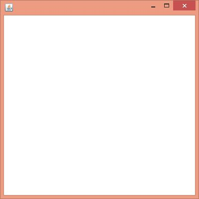
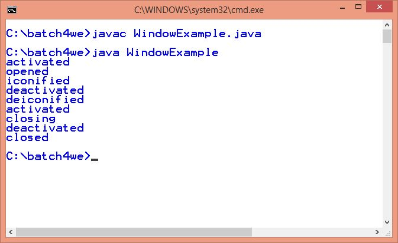

Java WindowListener Interface
17 Mar 2025 | 3 min read
The Java WindowListener is notified whenever you change the state of window. It is notified against WindowEvent. The WindowListener interface is found in java.awt.event package. It has seven methods.
WindowListener Interface Declaration
The declaration for java.awt.event.WindowListener interface is shown below:
public interface WindowListener extends EventListener
Methods of WindowListener Interface
The signature of 7 methods found in WindowListener interface with their usage are given below:
| Sr. no. | Method signature | Description |
|---|---|---|
| 1. | public abstract void windowActivated(WindowEvent e); | It is called when the Window is set to be an active Window. |
| 2. | public abstract void windowClosed(WindowEvent e); | It is called when a window has been closed as the result of calling dispose on the window. |
| 3. | public abstract void windowClosing(WindowEvent e); | It is called when the user attempts to close the window from the system menu of the window. |
| 4. | public abstract void windowDeactivated(WindowEvent e); | It is called when a Window is no longer the active Window. |
| 5. | public abstract void windowDeiconified(WindowEvent e); | It is called when a window is changed from a minimized to a normal state. |
| 6. | public abstract void windowIconified(WindowEvent e); | It is called when a window is changed from a normal to a minimized state. |
| 7. | public abstract void windowOpened(WindowEvent e); | It is called when a Window is first opened. |
Examples
Java WindowListener Example
WindowListenerExample.java
import java.awt.*;
import java.awt.event.*;
public class WindowListenerExample extends Frame implements WindowListener {
WindowListenerExample() {
addWindowListener(this);
setSize(400, 400);
setLayout(null);
setVisible(true);
}
public void windowActivated(WindowEvent arg0) {
System.out.println("activated");
}
public void windowClosed(WindowEvent arg0) {
System.out.println("closed");
}
public void windowClosing(WindowEvent arg0) {
System.out.println("closing");
dispose();
}
public void windowDeactivated(WindowEvent arg0) {
System.out.println("deactivated");
}
public void windowDeiconified(WindowEvent arg0) {
System.out.println("deiconified");
}
public void windowIconified(WindowEvent arg0) {
System.out.println("iconified");
}
public void windowOpened(WindowEvent arg0) {
System.out.println("opened");
}
public static void main(String[] args) {
new WindowListenerExample();
}
}
Output:
 